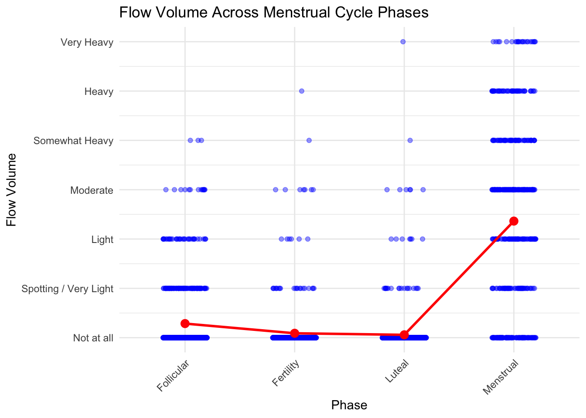
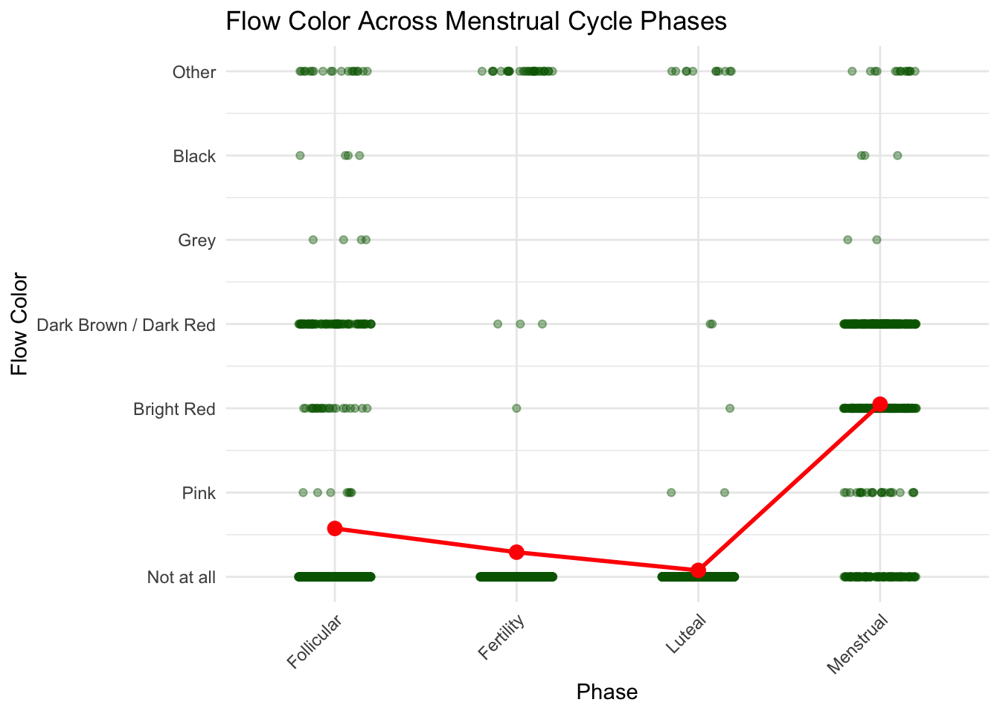
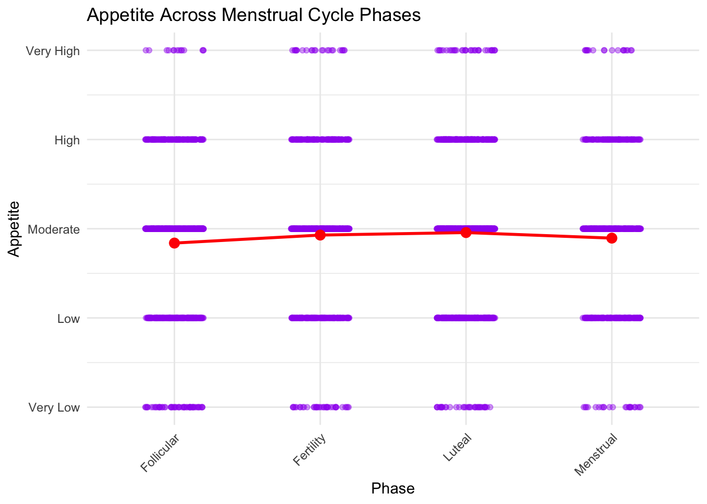
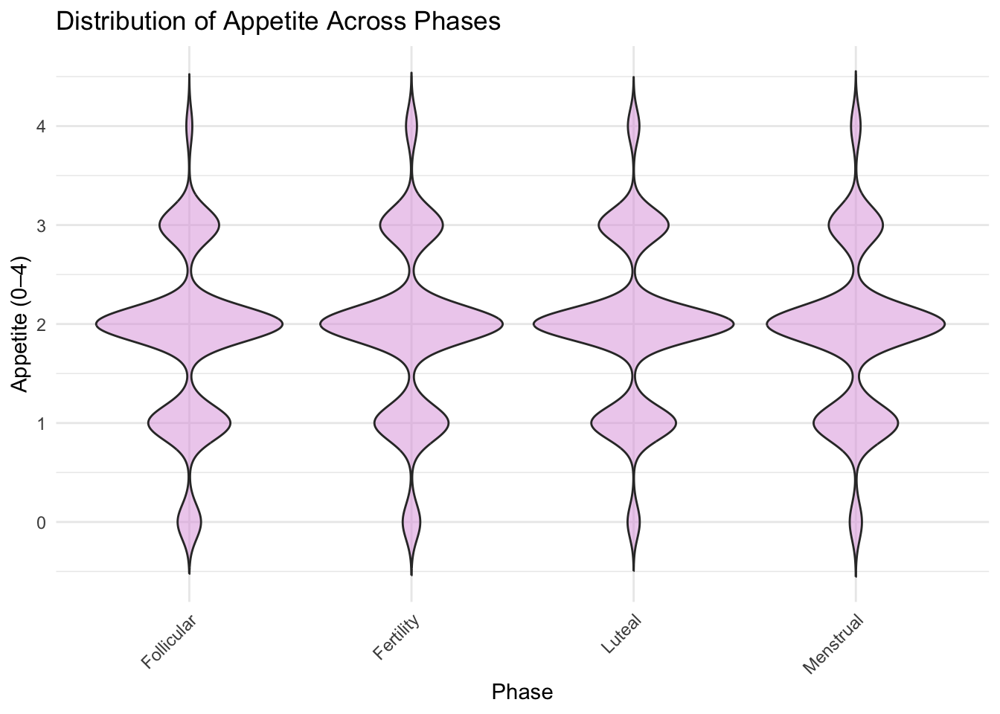
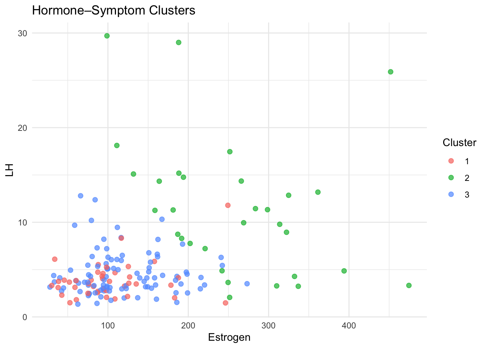

hormone
##yue’s interest: phase, lh, estrogen, moodswing, fatigue
first, explore relationship between LH and estrogen
 EDA Average hormone profiles varied systematically across menstrual
cycle phases. Estrogen exhibited a clear surge during the Fertility
(ovulatory) phase, while LH showed a small peak at the same phase,
consistent with the known physiological LH surge that triggers
ovulation. Both hormones were relatively low during the Menstrual phase
and increased through the Follicular phase before peaking in Fertility,
then declining during the Luteal phase. These patterns confirm that the
hormonal data capture biologically meaningful endocrine rhythms across
the cycle.
EDA Average hormone profiles varied systematically across menstrual
cycle phases. Estrogen exhibited a clear surge during the Fertility
(ovulatory) phase, while LH showed a small peak at the same phase,
consistent with the known physiological LH surge that triggers
ovulation. Both hormones were relatively low during the Menstrual phase
and increased through the Follicular phase before peaking in Fertility,
then declining during the Luteal phase. These patterns confirm that the
hormonal data capture biologically meaningful endocrine rhythms across
the cycle.
fatigue and moodswing
##this two bar graph show the proportion of fatigue and moodswing among four phases, but they are hard to read.
#so i aim to change the catogorical value (low, moderate, high) to 1,2,3, and so on. i want to sum and avrage. to show a typical cahnge of fatigue and mood in four phases.


violin graphs for moodswing
## Warning: Removed 544 rows containing missing values or values
## outside the scale range (`geom_point()`). violin for fatigue
violin for fatigue
## Warning: Removed 331 rows containing missing values or values
## outside the scale range (`geom_point()`).
Both mood swing and fatigue showed clear phase-dependent variation. After converting ordinal symptom ratings into numeric intensity scores, average mood swing and fatigue levels were highest during the Menstrual phase and lowest during the Follicular phase. Violin plots revealed substantial inter-individual variability but consistent right-skewed distributions during Menstrual and Luteal phases, indicating higher symptom burden during these periods.
approach: longtidual changes
## Linear mixed model fit by REML. t-tests use Satterthwaite's method [
## lmerModLmerTest]
## Formula: moodswing_num ~ phase + (1 | id)
## Data: my_int_numeric
##
## REML criterion at convergence: 8506.2
##
## Scaled residuals:
## Min 1Q Median 3Q Max
## -3.0689 -0.5616 -0.1457 0.4561 4.1382
##
## Random effects:
## Groups Name Variance Std.Dev.
## id (Intercept) 1.051 1.025
## Residual 1.091 1.044
## Number of obs: 2846, groups: id, 42
##
## Fixed effects:
## Estimate Std. Error df t value Pr(>|t|)
## (Intercept) 1.464e+00 1.633e-01 4.512e+01 8.967 1.38e-11 ***
## phaseFertility -2.881e-03 5.783e-02 2.805e+03 -0.050 0.9603
## phaseLuteal 1.319e-01 5.299e-02 2.807e+03 2.489 0.0129 *
## phaseMenstrual 3.584e-01 6.118e-02 2.806e+03 5.858 5.24e-09 ***
## ---
## Signif. codes: 0 '***' 0.001 '**' 0.01 '*' 0.05 '.' 0.1 ' ' 1
##
## Correlation of Fixed Effects:
## (Intr) phsFrt phsLtl
## phaseFrtlty -0.166
## phaseLuteal -0.184 0.525
## phaseMnstrl -0.159 0.457 0.506## Linear mixed model fit by REML. t-tests use Satterthwaite's method [
## lmerModLmerTest]
## Formula: fatigue_num ~ phase + (1 | id)
## Data: my_int_numeric
##
## REML criterion at convergence: 7930.3
##
## Scaled residuals:
## Min 1Q Median 3Q Max
## -3.1591 -0.6811 -0.0214 0.5734 3.6953
##
## Random effects:
## Groups Name Variance Std.Dev.
## id (Intercept) 0.4885 0.6989
## Residual 0.8978 0.9475
## Number of obs: 2846, groups: id, 42
##
## Fixed effects:
## Estimate Std. Error df t value Pr(>|t|)
## (Intercept) 1.803e+00 1.140e-01 4.746e+01 15.817 < 2e-16 ***
## phaseFertility -3.221e-03 5.246e-02 2.806e+03 -0.061 0.951
## phaseLuteal 6.817e-02 4.806e-02 2.811e+03 1.418 0.156
## phaseMenstrual 2.740e-01 5.549e-02 2.809e+03 4.937 8.39e-07 ***
## ---
## Signif. codes: 0 '***' 0.001 '**' 0.01 '*' 0.05 '.' 0.1 ' ' 1
##
## Correlation of Fixed Effects:
## (Intr) phsFrt phsLtl
## phaseFrtlty -0.216
## phaseLuteal -0.239 0.525
## phaseMnstrl -0.206 0.457 0.506Longitudinal Mixed-Effects Modeling of Symptoms
To account for repeated measurements within individuals, linear mixed-effects models with random intercepts for participant ID were fitted. For mood swings, relative to the Follicular phase, the Luteal phase showed a significant increase of approximately +0.13 units (t = 2.49), while the Menstrual phase showed a much larger increase of approximately +0.36 units (t = 5.86). For fatigue, only the Menstrual phase differed significantly from the Follicular phase, with an increase of approximately +0.27 units (t = 4.94); Fertility and Luteal phases showed negligible and non-significant differences. These results demonstrate that within individuals, mood disturbances and fatigue are most strongly elevated during the Menstrual phase.
reletionship between hormone and flow color, flow volume, and appetite
Overall scatter plot for three variables:
## Warning: Removed 460 rows containing non-finite outside the scale
## range (`stat_summary()`).
## Removed 460 rows containing non-finite outside the scale
## range (`stat_summary()`).## Warning: Removed 460 rows containing missing values or values
## outside the scale range (`geom_point()`).
## Warning: Removed 510 rows containing non-finite outside the scale
## range (`stat_summary()`).## Warning: Removed 510 rows containing non-finite outside the scale
## range (`stat_summary()`).## Warning: Removed 510 rows containing missing values or values
## outside the scale range (`geom_point()`).
## Warning: Removed 226 rows containing non-finite outside the scale
## range (`stat_summary()`).## Warning: Removed 226 rows containing non-finite outside the scale
## range (`stat_summary()`).## Warning: Removed 226 rows containing missing values or values
## outside the scale range (`geom_point()`).


 add violin data:
add violin data:
## Warning: Removed 2567 rows containing non-finite outside the scale
## range (`stat_ydensity()`).
## NULL## Warning: Removed 2617 rows containing non-finite outside the scale
## range (`stat_ydensity()`).
## Warning: Removed 2333 rows containing non-finite outside the scale
## range (`stat_ydensity()`).
#Flow volume & flow color: There are clear differences across menstrual cycle phases. Likely patterns: heavier flow and darker color in the Menstrual phase, lighter/spotting in Follicular/Luteal.
#Appetite:Overall differences across phases are not statistically significant at α = 0.05. There may be a trend, but the variation is smaller or more individual-specific.
To account for within-subject repeated measures and get phase-specific effects, we can fit CLMM models:
## Cumulative Link Mixed Model fitted with the Laplace approximation
##
## formula: flow_volume ~ phase + (1 | id)
## data: other_interest
##
## link threshold nobs logLik AIC niter max.grad cond.H
## logit flexible 3091 -1801.42 3622.83 824(3300) 2.08e-03 1.6e+02
##
## Random effects:
## Groups Name Variance Std.Dev.
## id (Intercept) 0.8281 0.91
## Number of groups: id 42
##
## Coefficients:
## Estimate Std. Error z value Pr(>|z|)
## phaseFertility -1.5928 0.2016 -7.90 2.79e-15 ***
## phaseLuteal -2.1400 0.2072 -10.33 < 2e-16 ***
## phaseMenstrual 3.1333 0.1423 22.02 < 2e-16 ***
## ---
## Signif. codes: 0 '***' 0.001 '**' 0.01 '*' 0.05 '.' 0.1 ' ' 1
##
## Threshold coefficients:
## Estimate Std. Error z value
## Not at all|Spotting / Very Light 1.5725 0.1712 9.183
## Spotting / Very Light|Light 2.5094 0.1802 13.926
## Light|Moderate 3.3266 0.1904 17.475
## Moderate|Somewhat Heavy 4.4350 0.2065 21.475
## Somewhat Heavy|Heavy 5.2151 0.2229 23.396
## Heavy|Very Heavy 6.5315 0.2810 23.241
## (2568 observations deleted due to missingness)## Warning in update.uC(rho): Non finite negative log-likelihood
## at iteration 48## Cumulative Link Mixed Model fitted with the Laplace approximation
##
## formula: flow_color ~ phase + (1 | id)
## data: other_interest
##
## link threshold nobs logLik AIC niter max.grad cond.H
## logit flexible 3041 -1733.01 3486.03 891(3564) 2.66e-03 7.1e+02
##
## Random effects:
## Groups Name Variance Std.Dev.
## id (Intercept) 0.5171 0.7191
## Number of groups: id 42
##
## Coefficients:
## Estimate Std. Error z value Pr(>|z|)
## phaseFertility -1.5180 0.2029 -7.481 7.39e-14 ***
## phaseLuteal -2.8931 0.2764 -10.467 < 2e-16 ***
## phaseMenstrual 2.1435 0.1280 16.751 < 2e-16 ***
## ---
## Signif. codes: 0 '***' 0.001 '**' 0.01 '*' 0.05 '.' 0.1 ' ' 1
##
## Threshold coefficients:
## Estimate Std. Error z value
## Not at all|Pink 1.3511 0.1493 9.048
## Pink|Bright Red 1.4809 0.1506 9.835
## Bright Red|Dark Brown / Dark Red 2.3963 0.1586 15.105
## Dark Brown / Dark Red|Grey 4.3868 0.1903 23.053
## Grey|Black 4.4633 0.1926 23.178
## Black|Other 4.5598 0.1957 23.306
## (2618 observations deleted due to missingness)## Cumulative Link Mixed Model fitted with the Laplace approximation
##
## formula: appetite ~ phase + (1 | id)
## data: other_interest
##
## link threshold nobs logLik AIC niter max.grad cond.H
## logit flexible 3325 -3615.00 7246.01 603(2993) 1.73e-03 9.3e+01
##
## Random effects:
## Groups Name Variance Std.Dev.
## id (Intercept) 1.398 1.183
## Number of groups: id 42
##
## Coefficients:
## Estimate Std. Error z value Pr(>|z|)
## phaseFertility 0.15449 0.09975 1.549 0.121
## phaseLuteal 0.36579 0.09154 3.996 6.44e-05 ***
## phaseMenstrual 0.11871 0.10475 1.133 0.257
## ---
## Signif. codes: 0 '***' 0.001 '**' 0.01 '*' 0.05 '.' 0.1 ' ' 1
##
## Threshold coefficients:
## Estimate Std. Error z value
## Very Low|Low -3.5037 0.2132 -16.431
## Low|Moderate -1.0604 0.1971 -5.381
## Moderate|High 1.8759 0.1989 9.430
## High|Very High 4.3591 0.2249 19.384
## (2334 observations deleted due to missingness)#interpretation: Flow volume: The relatively low AIC (3622.83) compared with the other models indicates a strong phase-dependent structure in flow volume.Because flow volume is directly driven by bleeding physiology, the good model fit supports that menstrual phase is the dominant determinant of bleeding intensity.
Flow color: The lowest AIC across all three models (3486.03) indicates that flow color is even more strongly phase-locked than flow volume.
Appetite: Model converged very well (low gradient, strong Hessian stability). The random intercept variance for individual appetite baseline was: Variance = 1.398, SD = 1.183, 42 individuals. This indicates large between-person differences in baseline appetite, confirming the necessity of mixed-effects modeling instead of independent-sample methods.
Conclusion: Flow volume is strongly structured by menstrual phase, with the cleanest signal among all three outcomes.
Flow color is the most phase-sensitive outcome in your entire dataset, tightly anchored to menstrual cycle transitions.
Only the Luteal phase showed a statistically significant increase in appetite relative to the Follicular phase, This estimate is on the log-odds scale, meaning that the odds of reporting higher appetite categories increase substantially in the Luteal phase within the same individuals. Appetite did not differ significantly in the fertility and menstrual phase. This confirms that appetite elevation is a Luteal-specific physiological effect, not a general cycle-wide fluctuation.
Clustering: 
## # A tibble: 3 × 7
## cluster lh estrogen moodswing_num fatigue_num appetite_num flow_volume_num
## <fct> <dbl> <dbl> <dbl> <dbl> <dbl> <dbl>
## 1 1 3.82 101. 1.85 2.08 1.92 2.45
## 2 2 11.5 256. 1.45 1.93 2.14 0.212
## 3 3 4.58 119. 1.47 1.82 1.83 0.146Unsupervised k-means clustering applied to six standardized features (LH, estrogen, mood swing, fatigue, appetite, and flow volume) identified three distinct physiological–symptom phenotypes:
Cluster 1 (Menstrual–High Symptom–High Flow Group) was characterized by low hormones (LH = 3.82, estrogen = 101.00), the highest mood swing (1.85) and fatigue (2.08), and markedly elevated flow volume (2.45).
Cluster 2 (Ovulatory–High Hormone–High Appetite Group) showed extremely high hormones (LH = 11.47, estrogen = 256.48), the highest appetite (2.14), low mood swing (1.45) and fatigue (1.93), and minimal flow (0.21).
Cluster 3 (Baseline–Low Symptom Group) exhibited moderate hormone levels (LH = 4.58, estrogen = 119.21), the lowest mood swing (1.47) and fatigue (1.82), stable appetite (1.83), and minimal flow (0.15).
These clusters closely align with known biological states of the menstrual cycle, corresponding to menstrual symptomatic states, ovulatory high-hormone states, and baseline low-symptom states.
Overall final results: Flow volume and flow color exhibited the strongest phase-locking across the menstrual cycle, while appetite showed a robust, individual-specific increase restricted to the Luteal phase, with substantial between-person variability dominating overall appetite levels.